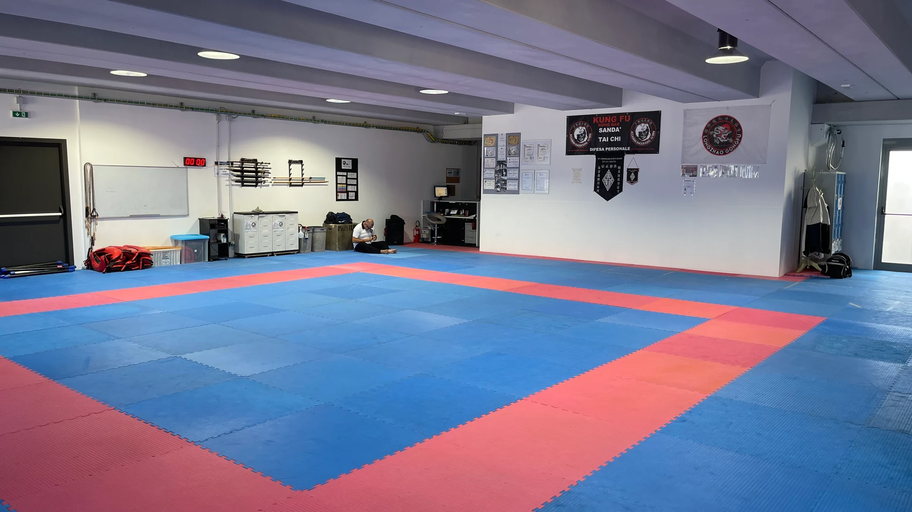
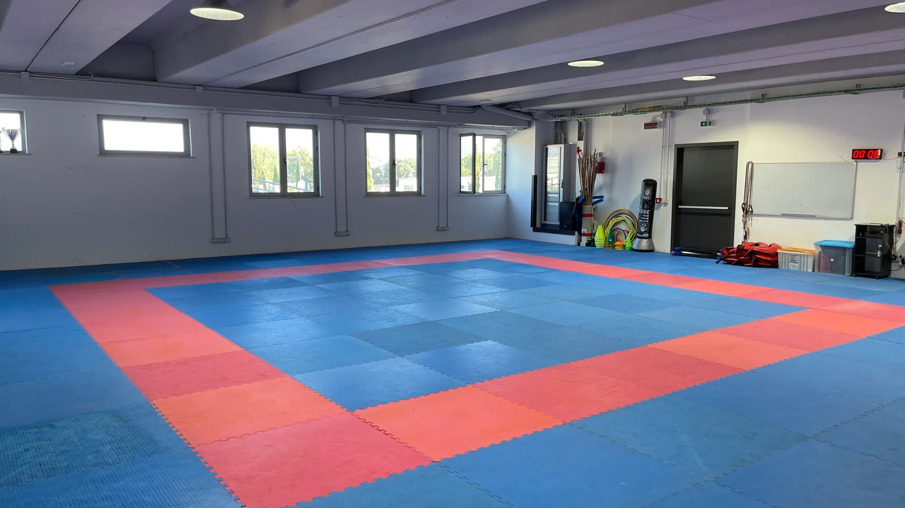

Informazioni generali
Sede: Palestra Privilege – Via Arnaldo Maria Angelini 8, 05100 Terni
Giorni di sospensione delle lezioni:
- Dal 21 dicembre 2026 al 6 gennaio 2027 inclusi
- Dal 26 al 29 marzo 2027 inclusi
- 2 giugno 2027
Presentazione della scuola Kung Fu Terni
La scuola di arti marziali “Accademia Shaolin Kung Fu Terni” è un luogo dove la tradizione orientale incontra la passione e la dedizione per il Kung Fu e il Sanda. Con un'esperienza di oltre quarant'anni, garantisce professionalità ed efficacia sia nella diffusione dello stile tradizionale sia nella difesa personale.
Il Maestro Luca Primavera, diretto discepolo del Maestro Zanetti della famiglia del Maestro Tang, e il Maestro Alessandro Bufi uniscono con passione le loro competenze per trasmettere l'arte del Kung Fu. Vantano circa 40 anni di esperienza e sono altamente qualificati sia nell'insegnamento che nella pratica agonistica, permettendo agli allievi di apprendere le tecniche più raffinate del Kung Fu e del Sanda.
Fondata con l'obiettivo di promuovere il Kung Fu e il Sanda, l'Accademia non si limita all'insegnamento delle tecniche marziali, ma abbraccia anche i valori di disciplina, rispetto e perseveranza. La nostra scuola offre un ambiente accogliente e stimolante per tutti coloro che desiderano intraprendere un viaggio di crescita personale, fisica e spirituale attraverso l'arte marziale. Vi invitiamo a scoprire i benefici del Kung Fu e del Sanda presso la nostra Accademia.
Le nostre discipline
Kung Fu Tradizionale: il Kung Fu è molto più di una semplice pratica fisica; è un'arte che abbraccia filosofia, cultura e spiritualità. I nostri corsi di Kung Fu tradizionale offrono un approfondito studio delle forme (Taolu), delle tecniche di combattimento, della meditazione e dell'uso delle armi tradizionali.
Sanda: conosciuto anche come “Sanshou”, il Sanda è una forma moderna di combattimento sportivo che combina tecniche di pugno, calcio, proiezioni e lotta. I nostri allenamenti di Sanda sono progettati per migliorare la resistenza, la velocità e la strategia di combattimento, preparando gli allievi per competizioni a livello nazionale e internazionale.
Taichi: il corso di Tai Chi si rivolge a tutti coloro che si pongono l’obiettivo di liberarsi dallo stress del quotidiano unito al piacere di acquisire i concetti fondamentali di vera arte marziale alla scoperta di quell’Io interiore e dell’energia vitale, detta CHI, che viene sollecitata e potenziata attraverso la pratica di questa “ginnastica di lunga vita”. Così infatti viene definita da molti studiosi che hanno dimostrato l’efficacia della pratica a tutti i livelli, da quello puramente fisico, mentale fino a quello curativo. Infatti, molte patologie, da quelle neurovegetative fino a quelle tipiche di un’età più avanzata, hanno riscontrato beneficio scientificamente dimostrato.
Per chi sono i nostri corsi
Offriamo una vasta gamma di corsi per tutte le età e livelli di esperienza, dai principianti ai praticanti avanzati. I nostri programmi includono:
- Corsi per bambini: un'introduzione divertente e sicura al mondo delle arti marziali, con particolare attenzione allo sviluppo della coordinazione, della fiducia in sé stessi e del rispetto reciproco.
- Corsi per adulti: allenamenti intensivi che combinano esercizi fisici e tecniche marziali, ideali per chi desidera migliorare la propria forma fisica, apprendere abilità di autodifesa e raggiungere un benessere olistico.
- Allenamenti personalizzati: lezioni private e piani di allenamento su misura per rispondere alle specifiche esigenze e obiettivi di ogni allievo.
Perché scegliere “Kung Fu Terni”
Scegliere “Kung Fu Terni” significa entrare a far parte di una famiglia appassionata e solidale. La nostra scuola si distingue per:
- Qualità dell'insegnamento: istruttori certificati con una profonda conoscenza delle arti marziali.
- Ambiente positivo: un'atmosfera accogliente e inclusiva che incoraggia il progresso personale.
- Crescita personale: un approccio che integra corpo e mente, favorendo lo sviluppo di abilità fisiche e mentali.
- Eventi e competizioni: partecipazione a competizioni, seminari e workshop per arricchire l'esperienza degli allievi.
Vi invitiamo a visitare la nostra scuola, assistere a una lezione e scoprire di persona i benefici del Kung Fu e del Sanda. Per ulteriori informazioni non esitate a contattarci: saremo lieti di rispondere a tutte le vostre domande e di accogliervi nella nostra famiglia marziale.


Regolamento
1. Finalità e valori della scuola
La Scuola Kung Fu Terni si impegna a trasmettere gli insegnamenti tradizionali delle arti marziali cinesi, promuovendo il rispetto, la disciplina, la crescita personale e la salute psicofisica. L’ambiente deve essere sicuro, inclusivo e rispettoso.
2. Comportamento e disciplina
- Ogni praticante deve comportarsi con rispetto verso maestri, compagni, strutture e attrezzature.
- L’uso della violenza al di fuori del contesto marziale è severamente vietato.
- È vietato utilizzare le tecniche apprese per fini aggressivi, di prevaricazione o intimidazione.
- Gli atleti devono seguire le indicazioni degli insegnanti favorendo un clima di rispetto e collaborazione reciproci.
3. Presenze e puntualità
- La frequenza regolare agli allenamenti è fondamentale per la crescita marziale.
- L’atleta deve arrivare puntuale e avvisare in caso di assenza.
- Chi arriva in ritardo deve attendere il consenso del Maestro per unirsi alla lezione.
- È obbligatorio timbrare il proprio tesserino personale sull’apposito timbratore all’ingresso della sala di lezione.
- Al termine dell’allenamento è d’obbligo, per gli atleti che ne hanno usufruito, la pulizia del materiale di allenamento. Al termine della pulizia il materiale va riposto negli appositi scompartimenti.
4. Abbigliamento e igiene
- È obbligatorio l’uso dell’uniforme ufficiale della scuola (divisa, cintura, eventuali protezioni).
- L’uniforme deve essere pulita e ordinata.
- Ogni praticante deve curare la propria igiene personale, tagliare le unghie e rimuovere accessori durante l’allenamento.
- Gli indumenti che si indossano all’ingresso in accademia e i borsoni DEVONO essere lasciati negli appositi spogliatoi. È possibile portare in sala di allenamento cellulare, portafoglio e altri effetti personali oltre al materiale personale protettivo necessario per l’allenamento.
- Per accedere alla sala di allenamento è fatto obbligo di usare SOLAMENTE le apposite scarpette o ciabatte.
5. Sicurezza e responsabilità
- L’atleta si impegna a praticare con attenzione e rispetto dell’incolumità altrui.
- È obbligatorio segnalare agli insegnanti eventuali infortuni o condizioni fisiche particolari prima della lezione.
- La Scuola declina ogni responsabilità per danni causati da comportamenti non conformi al regolamento.
6. Esami, gradi e partecipazione a eventi
- L’accesso agli esami di passaggio di grado e alle competizioni è a discrezione degli insegnanti e subordinato a frequenza, comportamento e preparazione.
- In merito agli atleti agonisti, per ottenere l’accesso alle competizioni e agli esami di grado è obbligatorio frequentare almeno il 70% delle lezioni ogni mese oltre ad ottenere un punteggio sufficiente alle prove agonistiche in itinere (novembre ed aprile).
- Le gare, esibizioni o stage esterni devono essere autorizzati.
- L’allievo si impegna a rappresentare la Scuola con onore e correttezza.
7. Norme generali
- È vietato filmare, fotografare o registrare le lezioni senza autorizzazione.
- Durante la lezione è vietato l’uso del telefono cellulare (i telefoni saranno appositamente riposti presso i cassetti dedicati dentro la sala di allenamento).
- Gli abbonamenti delle lezioni di kung-fu sono di diverso tipo in base al tipo di corso frequentato e possono essere sottoscritti durante i giorni di apertura della segreteria, che sono indicati sulla chat comune della scuola 5 giorni prima dell’inizio del mese.
- Gli abbonamenti sottoscritti possono essere sospesi o sottoposti a recupero di lezioni solo tramite certificato medico (per una durata di malattia di almeno 10 giorni) e solo per coloro che hanno sottoscritto almeno l’abbonamento trimestrale/semestrale o annuale.
- Ogni nuovo atleta ha diritto a due lezioni di prova (a scelta dell’allievo) previa compilazione del modulo di scarico responsabilità da parte del genitore se minorenne o dello stesso atleta.
- Per eseguire l’iscrizione all’Accademia Kung Fu Terni è necessaria la seguente documentazione:
- certificazione medica sportiva NON agonistica;
- certificazione medica sportiva AGONISTICA per gli atleti agonisti;
- tesseramento all’ente di promozione sportiva per l’anno in corso comprensivo di assicurazione (pagamento una tantum);
- regolare pagamento della quota di iscrizione mensile;
- documento di iscrizione;
- scarico di responsabilità;
- firma del regolamento Kung Fu Terni relativo all’anno accademico in corso;
- liberatoria di CESSIONE DIRITTI DI UTILIZZO DI IMMAGINI/VIDEO DI PERSONE.
- La quota mensile di abbonamento DEVE ESSERE improrogabilmente regolarizzata entro i primi 10 giorni del mese durante gli orari di apertura della segreteria che sono comunicati all’inizio del mese. Qualora la quota non fosse regolarizzata entro suddetta scadenza non è possibile accedere alla sessione di allenamento per motivi assicurativi.
- Il materiale di allenamento può essere acquistato direttamente in segreteria o tramite WhatsApp al numero 340 2571421 e il pagamento (solo in CONTANTI o BB) DEVE essere regolarizzato entro l’ultimo venerdì del mese di acquisto. Qualora la quota non venisse regolarizzata entro suddetta data l’ordine del materiale richiesto slitterà al mese successivo.
- Tutti gli atleti devono essere OBBLIGATORIAMENTE in regola con la certificazione medico-sportiva sia di tipo non agonistico per gli atleti non agonisti che di tipo agonistico per gli atleti agonisti. Gli atleti non provvisti di certificato medico o scaduto non potranno accedere alle sale di lezione.